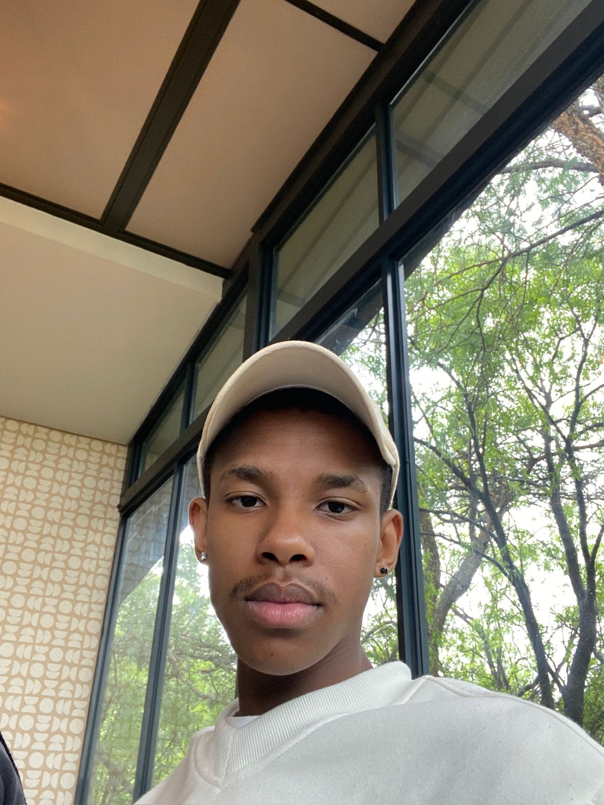

About Me
A third-year Bachelor of Computer Science student at Belgium Campus ITversity, majoring in Software Engineering. I specialize in front-end development with a keen interest in crafting fast, accessible, and responsive websites that offer seamless user experiences.
Currently, I’m expanding my knowledge in cybersecurity through the Cisco Networking Academy, while also exploring operational research — particularly linear programming and optimization techniques — to better understand how data-driven decision-making can enhance system efficiency.
Passionate about combining creative design with technical precision, I strive to build solutions that are not only visually engaging but also secure, scalable, and impactful.
